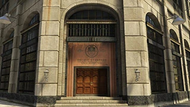

O Golpe da Pacific Standard
O Golpe Pacific Standard é o "Grand Finale" dos golpes originais de 2015. É o maior assalto a banco do jogo clássico e, até hoje, um dos mais tensos por causa da fuga.

As Missões de Preparação (5 Etapas)
1.Vans: Vocês precisam tirar fotos de várias vans da Post OP para encontrar a que tem os transponders. O navegador usa o celular para guiar o motorista.
2.Sinal: Vocês resgatam o Avi Schwartzman (olha ele aí de novo!) em uma ilha vigiada. É preciso levá-lo de barco até o lago, fugindo da polícia.
3.Hackear: Vocês roubam o equipamento de hackeamento de uma gangue em Vinewood. Um grupo serve de isca no furgão branco enquanto o outro leva o furgão preto.
4.Comboio: Vocês interceptam um comboio da Merryweather para roubar as cargas térmicas.
- Dica: Usem o Insurgent que liberaram no golpe anterior. Cuidado com o helicóptero Savage que ataca vocês.
5.Motos: Vocês invadem a sede dos Lost MC para roubar as motos Lectro. Elas serão os veículos de fuga na final.
A Final: O Grande Assalto
A equipe se divide em: Hacker, Demolição e Controle de Multidão (2 pessoas).
1. Dentro do Banco
- Controle de Multidão: Mantenha a barra de intimidação cheia. Atire perto dos reféns, mas não mate ninguém, ou a equipe da SWAT chegará e tornará a fuga impossível.
- Hacker e Demolição: Entram no cofre, colocam as cargas e pegam o dinheiro.
- Dica Crucial: Se apenas uma pessoa pegar todo o dinheiro (cerca de $1.250.000), fica mais fácil proteger a grana durante a fuga, já que cada tiro que o portador leva faz o valor total diminuir.
2. A Saída (Beco da Morte)
- Ao sair do banco, vocês terão centenas de policiais. Usem armas pesadas e avancem pelo beco lateral até as motos Lectro.
3. A Fuga das Motos (Onde tudo costuma dar errado)
O jogo quer que vocês usem as motos e sigam pelo cânion saltando de paraquedas no final.
- Estratégia 2026: As motos são frágeis. Se alguém cair, o dinheiro diminui e o risco de morte é alto.
- O Truque do Carro: No caminho para as motos, tentem roubar um carro comum blindado da polícia (o Riot) ou um carro civil rápido. É muito mais seguro do que ir de moto exposto aos tiros.
Lucro e Recompensas
- Pagamento Total: $1.250.000 (Dividido entre os 4)
- Bônus de Primeira Vez: $100.000
- Descontos Destravados: Carro Savage e a moto Lectro.
Ao terminar este, você fecha a saga dos apartamentos! Se você fez todos na ordem e com a mesma equipe, você ganha o bônus de $1.000.000 de "Tudo em Ordem" e "Lealdade"
Assista a este guia para saber mais sobre.
l